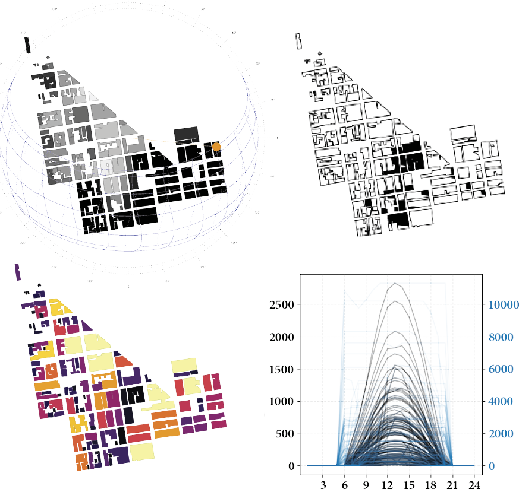
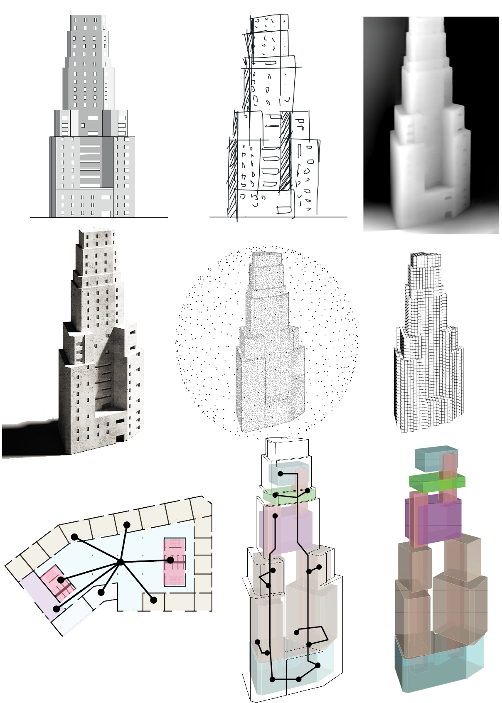
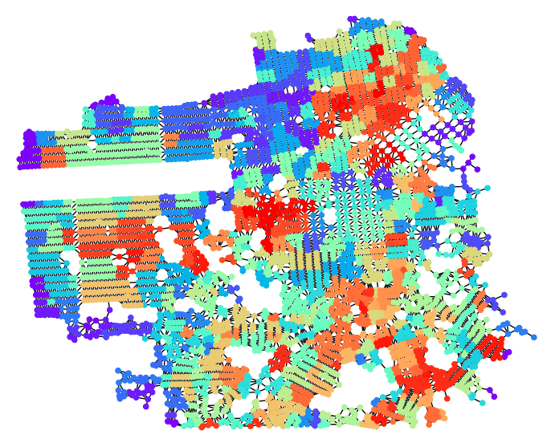
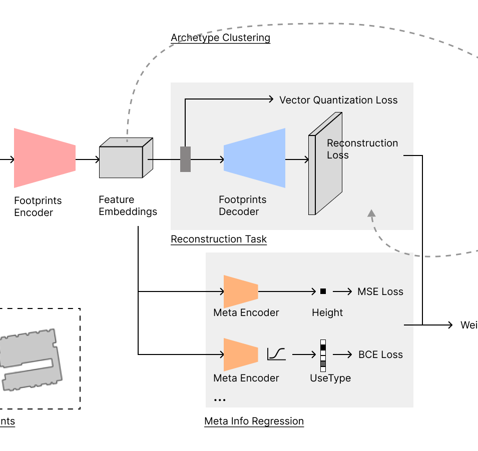
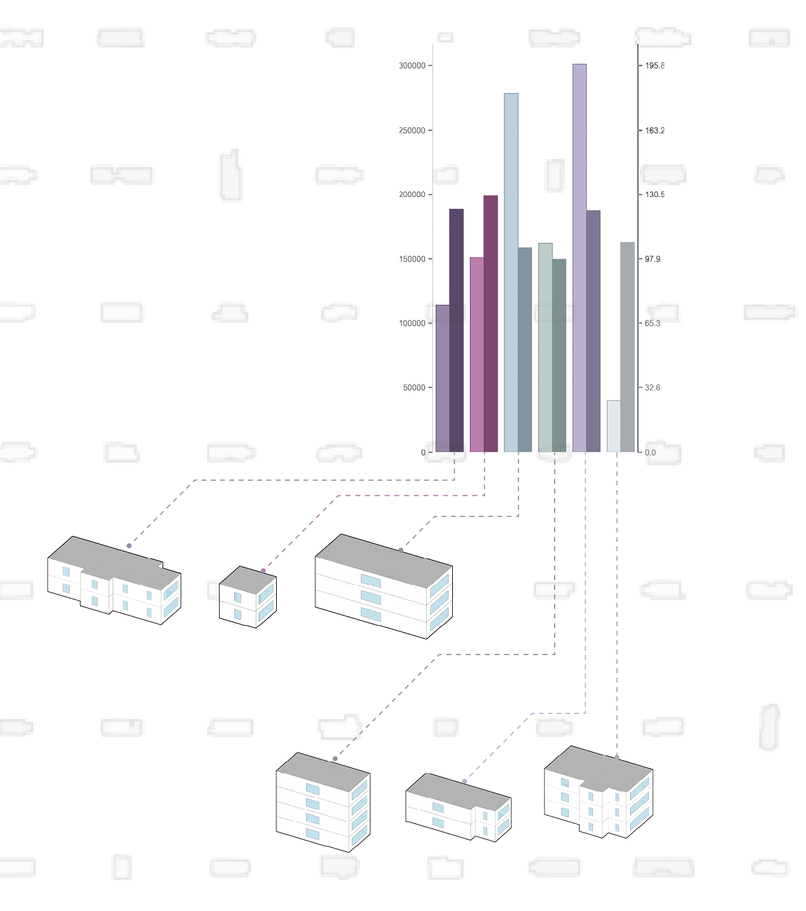
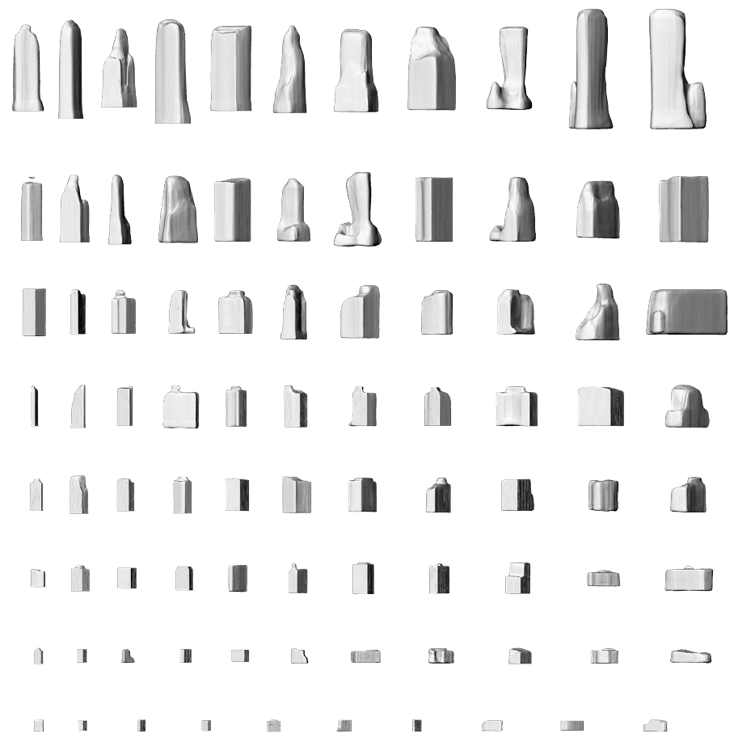

|
Xinwei Zhuang
(pronounced as Sheen-way Juin , 庄新伟)
I am an Assistant Professor of Architecture at Texas A&M University. I received my Ph.D. in Architecture with Designated Emphasis in New Media
from UC Berkeley, and has conducted research at Lawrence Berkeley National Laboratory. I hold an M.S. in Architectural Computation
from the Bartlett School of Architecture.
My research focuses on computational design,
artificial intelligence, and optimization for sustainable and resilient built environments. I work at the intersection of generative
design, urban energy modeling, and community microgrids.
Email /
CV /
Bio /
Scholar /
LinkedIn
|
|
Announcements
Laboratory for Architecture x Intelligent System
I established the Architecture x Intelligent System lab
to advance research, foster interdisciplinary collaboration,
and develop cutting-edge computational algorithms for both
undergraduate and graduate students. For more information,
please visit AXIS.
Ph.D oppurtunity
I am recruiting Ph.D. students with related research interests, as well as Graduate Research Assistants in machine learning–aided building archetype development.
Interested applicants are encouraged to reach out with a CV and a brief statement of research interests. For more information, please see the flier.
* The deadline for 2026 Fall admission has passed. Please stay tuned for 2027 Fall admission.
Selected Research
My research is centered on machine-learning-aided generative design,
with a special emphasis on energy efficiency and resilience.
My recent work concentrates on building stock analysis through
generative models and modeling urban environments with graph theory.
I am actively seeking collaboration opportunities in these areas.
|
|

|
Rapid Assessment of Solar Potential for
Building Surfaces in Complex Urban Morphologies Based on Vector Processing
Xinwei Zhuang, Guoquan Lyv, Zilong Zhao, Luisa Caldas
Solar Energy, 2025
paper /
github
We developed a fast, vector-based method for solar potential assessment in dense urban environments,
achieving facade-level accuracy (99%) with real-world validation in San Francisco. The implementation is available as open source.
Zhuang X., Lyv G., Zhao Z. and Caldas, L. (2025) Rapid Assessment of Solar Potential for
Building Surfaces in Complex Urban Morphologies Based on Vector Processing, Solar Energy, Vol. 294, pp. 113482. https://doi.org/10.1016/j.solener.2025.113482
|
|

|
Machine Learning for Generative Architectural Design: Advancements, Opportunities, and Challenges
Xinwei Zhuang, Pinru Zhu, Allen Y. Yang, Luisa Caldas
Automation in Construction, 2025
paper
This literature review examines the critical role of data encoding,
such as images, point clouds, topology graphs, and textual descriptions,
in revolutionizing architectural design through machine learning.
By using different data formats, architects can move beyond
rule-based methods and unlock unprecedented creative possibilities in architecture.
The paper emphasizes both significant advancements and ongoing challenges,
providing insights into the future AI-driven architectural design and research.
Zhuang X., Zhu P., Yang, A. and Caldas, L. (2025) Machine learning for generative architectural design:
Advancements, opportunities, and challenges, Automation in Construction, Volume 174, 2025, 106129,
ISSN 0926-5805, doi: 10.1016/j.autcon.2025.106129.
|
|

|
Across scales:
Hierarchical Urban Graph for Neighborhoods Partition and Decentralized Energy Autonomy
Xinwei Zhuang, Xiaolei Chu ,Junting Liang, Pinru Zhu, Marta C. Gonzalez, Luisa Caldas
ACADIA, 2024
paper
We propose Hierarchical Urban Graph, a multi-layered network approach designed to optimize urban neighborhood partitions
for energy autonomy and resilience by balancing renewable energy generation and consumption. Through a case study
of San Francisco, the methodology demonstrates improved stability in energy end-use patterns and reduces dependency on centralized grids.
Ultimately, this scalable, data-driven framework provides a tool for sustainable urban energy planning and infrastructure design.
Zhuang X., Chu X., Liang, J., Zhu P., Gonzalez, M. and Caldas, L. (2024) Across scales:
Hierarchical Urban Graph for Neighborhoods Partition and Decentralized Energy Autonomy, 2024 Conference on Association
for Computer Aided Design in Architecture (ACADIA): Designing Change, Calgary, Canada.
|
|

|
MARL: Multi-scale Archetype Representation Learning
for Urban Building Energy Modeling
Xinwei Zhuang*,
Zixun Huang*,
Wentao Zeng,
Luisa Caldas,
ICCVW, 2023
paper
/
poster
/
github
Refined and open-source release of an automated, geometrically detailed,
localized building archetype generator for energy modeling.
This paper delves into the specifics of an algorithm designed to
automatically generate building archetypes tailored to local contexts,
with a focus on detailed geometric resolution for energy modeling purposes.
We provide all codes and data necessary for replication.
Zhuang X., Huang Z., Zeng W. and Caldas L. (2023)
MARL: Multi-scale Archetype Representation Learning for Urban Building Energy Modeling,
Computer Vision Aided Architectural Design (CVAAD),
International Conference on Computer Vision (ICCV), Paris, France
|
|

|
Encoding Urban Ecologies: Automated Building Archetype Generation
through Self-Supervised Learning for Energy Modeling
Xinwei Zhuang*,
Zixun Huang*,
Wentao Zeng,
Luisa Caldas,
ACADIA, 2023
paper
/
video
Paper presents a high-level overview of the algorithm behind
the automated generation of localized building archetypes, outlines the algorithm's value proposition and its practical applications.
Zhuang X., Huang Z., Zeng W. and Caldas L. (2023) Encoding Urban
Ecologies: Automated Building Archetype Generation through Self-Supervised Learning for Energy
Modeling, 2023 Conference on Association for Computer Aided Design in Architecture (ACADIA): Habits of the Anthropocene,
Denver, United States of America
|
|

|
Synthesis and Generation for 3D Architecture V
olume with Generative Modeling
Xinwei Zhuang,
Yi Ju,
Allen Yang,
Luisa Caldas,
International Journal of Architecture Computing, 2023
paper
Introduces 3D learning in the architectural domain, leveraging generative
models to understand and manipulate the complex morphology of buildings.
By constructing an original database specifically tailored for this purpose,
the research offers capabilities for high-dimensional design exploration
and energy performance evaluation.
Zhuang X., Ju Y., Yang, A. and Caldas L. (2023) Synthesis and Generation for
3D Architecture Volume with Generative Modeling, International Journal of
Architecture Computing, Vol. 21, Issue 2: AI, Architecture, Accessibility, &
Data Justice, doi.10.1177/14780771231168233
|
|
{kind=link}